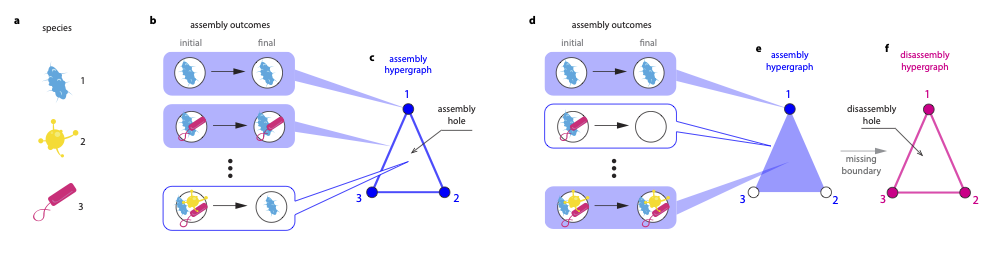
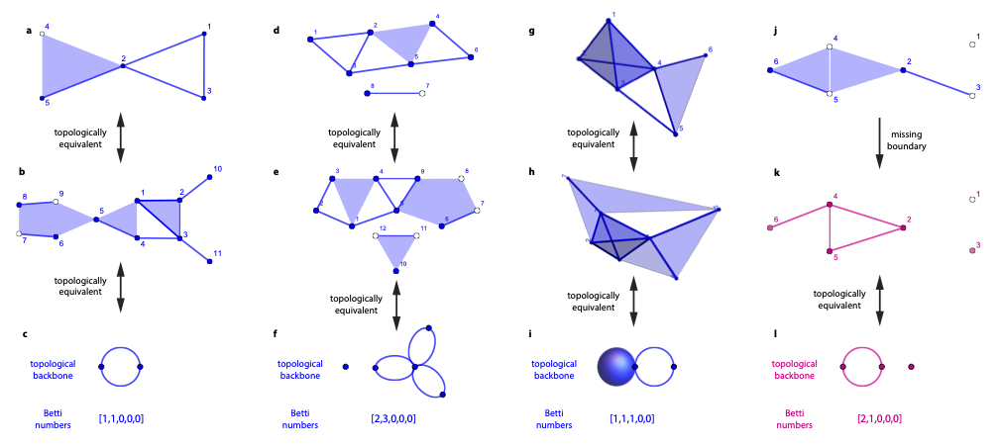

CoexistHypergraph.jl Documentation
Installation
Julia
This package is not registered (yet). You can install it via the Julia REPL like this:
julia> using Pkg
julia> Pkg.add(PackageSpec(url="https://github.com/akel123/CoexistHypergraph.jl.git", rev="master"))Or you can install it via the Pkg REPL like this:
(v1.3) pkg> add https://github.com/akel123/CoexistHypergraph.jl.git#masterR
If you already have R installed then you'll need to download install julia. You can check if julia is installed correctly by running the julia command in a terminal. If this command is not found, you will need to add it to your path following the proper instructions for your operating system.
In R use JuliaCall is used to interface between languages. For function summaries see this document. However studying these functions is not necessary since CoexistHypergraph's shows the proper functions to use from JuliaCall in the tutorial and examples.
The follwoing are steps to use CoexistHypergraph in R:
install.packages("JuliaCall")
library(JuliaCall)
julia <- julia_setup()
# only need to run this once
julia_install_package("https://github.com/akel123/CoexistHypergraph.jl.git#master")
# add the library every time you open a new session of R and want to use CoexistHypergraph
julia_library("CoexistHypergraph")Overview
Description


Quick Example
using CoexistHypergraph
N = 8 # number of species in our ecosystem
# create a random community matrix
σA = 0.1 # standard devation for entries
C = 0.1 # success rate of Bernoulli distribution used to populate matrix
A = random_communitymatrix(N, σA, C)
# create a random growth vector
μ = 0.3 # mean of LogNormal distribution used to generate each value
σr = 0.2 # standard deviation of LogNormal distribution used to generate each value
r = random_r_vector(N, μ, σr)
reg = 0
max_dim = 4
H = assembly_hypergraph_GLV(A, r; method = "permanence", regularization = reg)
R = disassembly_hypergraph(H)
# maybe save these for later if you want
save_hypergraph_dat("~/hypergraphs/assembly_hypergraph.dat", H)
save_hypergraph_dat("~/hypergraphs/disassembly_hypergraph.dat", R)
# get the betti numbers
betti_H = betti_hypergraph_ripscomplex(H; max_dim = max_dim)Citing
If you use CoexistHypergraph for academic research, please cite the following paper.
Paper Citation
Developers
- Marco Tulio
- Aaron Kelley